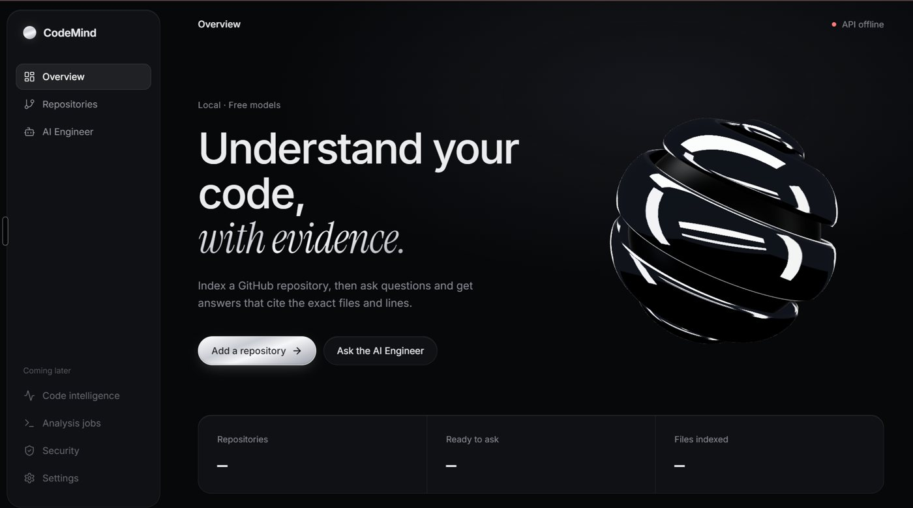

PDF software
KAIZEN PDF Toolkit
An open-source, browser-based toolkit for PDFs, images and documents, built on one design system and a reusable tool workspace.
Software developer
Software I am building and shipping. Each one started as a problem worth solving properly.
Projects
Live products, and what is coming next.
PDF software
An open-source, browser-based toolkit for PDFs, images and documents, built on one design system and a reusable tool workspace.

AI developer tool
Index a GitHub repository, then ask questions and get answers that cite the exact files and lines. Runs locally on free models.
Web app
A React and Vite tracker for goals, daily commitments, focus, planning, hydration and progress across a 115-day journey.
Case studies
The goal, the approach and where each project stands today.
KAIZEN · PDF toolkit
Productivity-116 · Web app
Grid Bot · Trading automation
Tech stack
Languages, frameworks, databases and tools. Filter by area, or hover a step in the flow to see what powers it.
How a request travels
GitHub
A year of commits, pull requests and issues, pulled live from my GitHub profile.